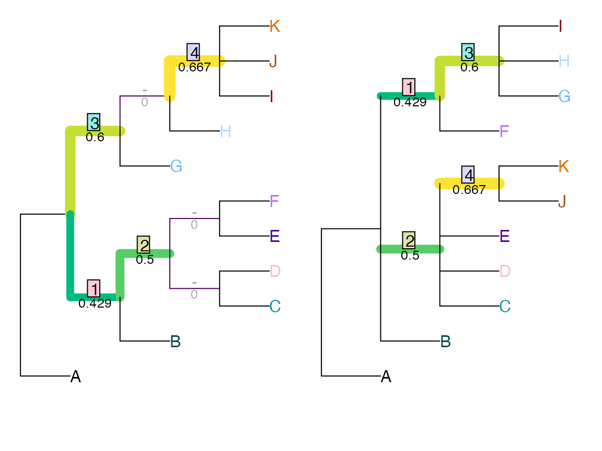
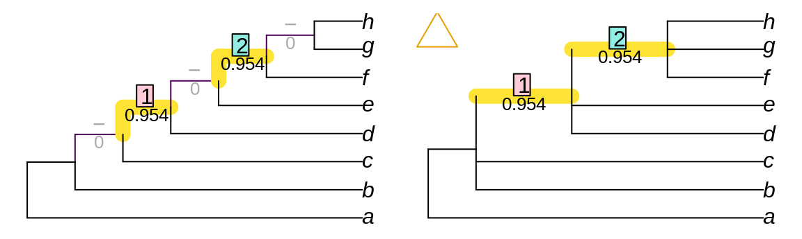
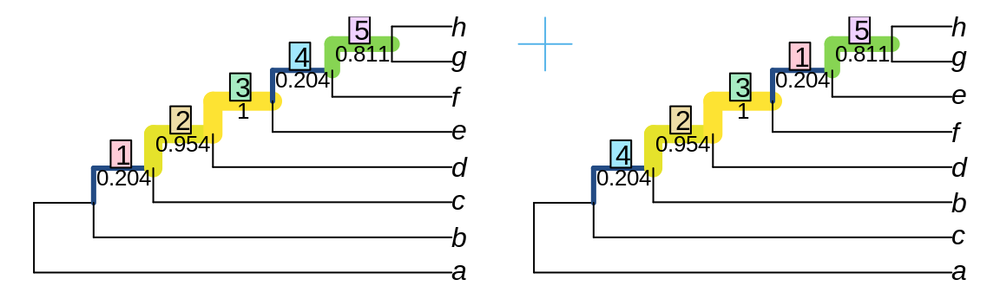
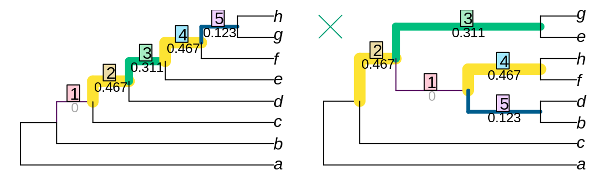
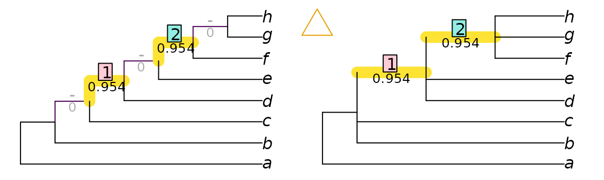
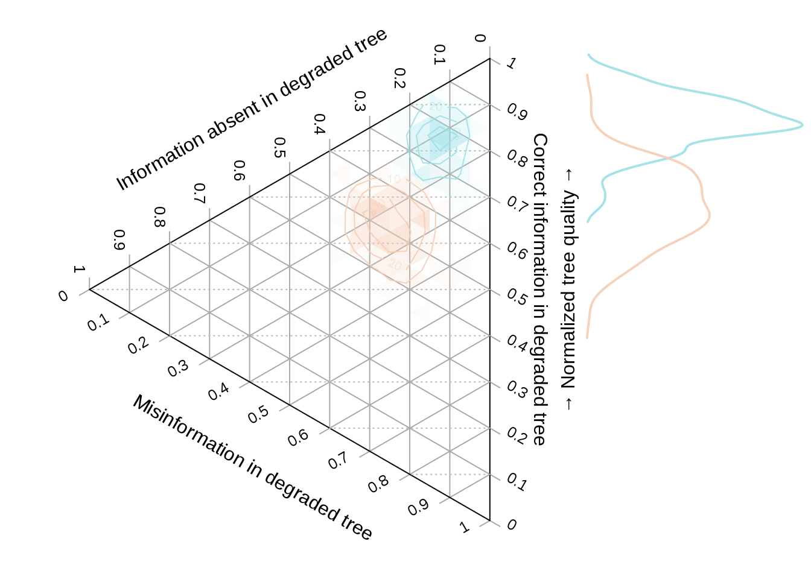

vignettes/using-distances.Rmd
using-distances.RmdOnce you understand how to use TreeDist to calculate tree distances, and what distances measure, the next step is to provide some context for the calculated distances.
The maximum value of most tree distance metrics scales with the number of terminals in the trees being compared. Typically, the resolution of the trees being compared also impacts the range of possible values. As such, it can be difficult to interpret the tree distance value without suitable context.
Normalizing a distance metric is one way to render its meaning more obvious. The appropriate normalizing constant may consider some thought, as it will depend on the purpose to which a tree distance metric is being put.
The default normalization behaviour of each functions in TreeDist is listed in the accompanying manual pages, visible under the function reference or by typing ?FunctionName in the R terminal. This default behaviour is triggered by setting normalize = TRUE.
Let’s work through a simple example using the Nye et al. similarity metric to compare two imperfectly-resolved trees.
library('TreeDist')
tree1 <- ape::read.tree(text='(A, ((B, ((C, D), (E, F))), (G, (H, (I, J, K)))));')
tree2 <- ape::read.tree(text='(A, (B, (C, D, E, (J, K)), (G, ((H, I), F))));')
VisualizeMatching(NyeTreeSimilarity, tree1, tree2,
Plot=TreeDistPlot, matchZeros = FALSE)
This is a nice metric to start with, because the maximum similarity between each pair of partitions is defined as one. (Astute readers might worry that the minimum similarity is greater than zero – that’s a harder problem to overcome.)
As such, the maximum similarity possible between two 11-tip trees is NSplits(11) = 8.
Normalizing against this value tells us how similar the two trees are, compared to two identical fully bifurcating eleven-tip trees; this is the default normalization method for NyeTreeSimilarity.
## [1] 0.3065476## [1] 0.3065476We might also be interested in comparing the tree similarity to the maximum score possible for two trees of the specified resolution. This value is given by the number of partitions in the least resolved of the two trees:
## [1] 0.4904762More concisely, we can provide a normalizing function:
## [1] 0.4904762If we are comparing lists of trees, this best value will depend on the number of partitions in each pair of trees. We can use the function pmin to select the less resoved of each pair of trees:
## [,1] [,2]
## [1,] 1.0000000 0.4904762
## [2,] 0.4904762 1.0000000Finally, if tree1 is a ‘target’ tree – perhaps one that has been used to simulate data from, or which is independently known to be true or virtuous – we may wish to normalize against the best possible match to that tree.
In that case, the best possible score is
## [1] 7and our normalized score will be
## [1] 0.3503401With the Nye et al. tree similarity metric, it is easy to calculate the maximum possible distnace. The diameter of other metrics is more difficult to calculate.
As an example, the variation of clustering information distance metric ranges in principle from zero, to the total amount of clustering information present in a pair of trees. But with even a modest number of tips, no pairs of trees exist in which every partition in one tree is perfectly contradicted by every other partition in the other; as such, any pair of trees will necessarily have some degree of similarity.
In such a context, it can be relevant to normalize tree similarity against the expected distance between a pair of random trees, rather than a maximum value. On this measure, distances greater than one denote trees that are more different than expected by chance, whereas a distance of zero denotes identity.
With the quartet divergence, the expected tree distance is readily calculated: any given quartet has a one in three chance of matching by chance.
##
## Attaching package: 'Quartet'## The following object is masked from 'package:TreeTools':
##
## UnshiftTree## The following object is masked from 'package:TreeDist':
##
## RobinsonFouldsexpectedQD <- 2 / 3
normalizedQD <- QuartetDivergence(QuartetStatus(tree1, tree2),
similarity = FALSE) / expectedQDThe expected distance is more difficult to calcluate for other metrics, but can be approximated by sampling random pairs of trees. Measured distances between 10 000 pairs of random bifurcating trees with up to 200 tips are available in the data package TreeDistData. We can view (normalized) distances for a selection of methods:
data('randomTreeDistances', package='TreeDistData')
methods <- c('vpi', 'vci', 'nts', 'qd')
methodCol <- c(vpi = '#e15659', vci = '#58a14e', nts = '#edc949', qd = '#af7aa1')
par(cex = 0.7, mar=c(5, 5, 0.01, 0.01))
nLeaves <- as.integer(dimnames(randomTreeDistances)[[3]])
plot(nLeaves, type='n', randomTreeDistances['vpi', 'mean', ], ylim=c(0.4, 1),
xlab = "Number of tips", ylab = "Normalized distance between random trees")
for (method in methods) {
dat <- randomTreeDistances[method, , ]
lines(nLeaves, dat['50%', ], pch=1, col=methodCol[method])
polygon(c(nLeaves, rev(nLeaves)), c(dat['25%', ], rev(dat['75%', ])),
border=NA, col = paste0(methodCol[method], '55'),)
}
text(202, randomTreeDistances[methods, '50%', '200'] + 0.02,
c('Variation of phylogenetic information',
'Variation of clustering information',
expression(paste(plain('Nye '), italic('et al.'))),
'Quartet divergence'
), col= methodCol[methods], pos=2)or use these calculated values to normalize our tree distance:
This score tells us how similar the two trees are. Similarity has two components: precision and accuracy. A tree can be 80% similar to a target tree because it contains 80% of the partitions in the target tree, and no incorrect partitions – or because it is perfectly bifurcating, but 10% of the partitions present are resolved incorrectly and are thus positively misleading.
In such a comparison, of course, it is more sensible to talk about partition information than just the number of partitions: an even partition may contain more information than two very uneven partitions, so the absence of two information-poor partitions may be preferable to the absence of one information-rich partition. As such, it is most instructive to think of the proportion of information that has been correctly resolved: the desideratum is that we find a tree that is as informative as possible about the true tree.
Ternary diagrams allow us to visualise the quality of a reconstructed tree with reference to a known ‘true’ tree:
testTrees <- list(
trueTree = ape::read.tree(text='(a, (b, (c, (d, (e, (f, (g, h)))))));'),
lackRes = ape::read.tree(text='(a, (b, c, (d, e, (f, g, h))));'),
smallErr = ape::read.tree(text='(a, (c, (b, (d, (f, (e, (g, h)))))));'),
bigErr = ape::read.tree(text='(a, (c, (((b, d), (f, h)), (e, g))));')
)
VisualizeMatching(NyeTreeSimilarity, testTrees$trueTree, testTrees$lackRes)
points(4, 7.5, pch=2, cex=3, col=Ternary::cbPalette8[2])
VisualizeMatching(NyeTreeSimilarity, testTrees$trueTree, testTrees$smallErr)
points(4, 7.5, pch=3, cex=3, col=Ternary::cbPalette8[3])
VisualizeMatching(NyeTreeSimilarity, testTrees$trueTree, testTrees$bigErr)
points(4, 7.5, pch=4, cex=3, col=Ternary::cbPalette8[4])
Better trees plot vertically towards the ‘shared information’ vertex. Resolution of trees increases towards the right; trees that are more resolved may be no better than less-resolved trees if the addition of resolution introduces error.
library('Ternary')
par(mar=rep(0.1, 4))
TernaryPlot(atip=NULL, btip=NULL, ctip=NULL,
alab='Absent information', blab='Shared information', clab='Misinformation',
lab.cex=0.8,
lab.offset=0.18, # higher value as longer tick labels
point='left', clockwise=FALSE,
#col=backgroundCol,
grid.lty='solid', grid.col='#aaaaaa',
grid.minor.lines = 0,
axis.labels = seq(0, 1, length.out=11L),
axis.col="#999999",
axis.labels.col = "black",
ticks.length = 0.025)
HorizontalGrid()
correct <- MutualClusteringInfo(testTrees$trueTree, testTrees)
resolved <- ClusteringInfo(testTrees)
unresolved <- resolved['trueTree'] - resolved
incorrect <- resolved - correct
TernaryPoints(cbind(unresolved, correct, incorrect),
pch=1:4, cex=2, col=Ternary::cbPalette8[1:4])
Here’s a noddy real-world example applying this to a simulation-style study.
First, let’s generate a starting tree, which will represent our reference topology:
Then, let’s generate 200 degraded trees. We’ll move away from the true tree by making a TBR move, then reduce resolution by taking the consensus of this tree, and three trees in its immediate neighbourhood, one NNI move away.
##
## Attaching package: 'TreeSearch'## The following objects are masked from 'package:TreeTools':
##
## AddTip, AllAncestors, AllDescendantEdges, AncestorEdge, ApeTime,
## CharacterInformation, CladeSizes, Cladewise, CollapseEdge,
## CollapseNode, ConsensusWithout, DescendantEdges, DoubleFactorial,
## doubleFactorials, EdgeAncestry, EnforceOutgroup, ExtractTaxa,
## ForestSplits, IC1Spr, LnRooted, LnRooted.int, LnUnrooted,
## LnUnrooted.int, LnUnrootedMult, LnUnrootedSplits,
## LogDoubleFactorial, LogDoubleFactorial.int, logDoubleFactorials,
## MarkMissing, MatrixToPhyDat, MRCA, MultiSplitInformation, N1Spr,
## NewickTree, NeworderPhylo, NeworderPruningwise, NexusTokens,
## NJTree, NonDuplicateRoot, NPartitions, NRooted, NSplits, NUnrooted,
## NUnrootedMult, NUnrootedSplits, PhyDat, PhyDatToMatrix,
## PhyToString, Postorder, PostorderEdges, Preorder, Pruningwise,
## RandomTree, ReadAsPhyDat, ReadCharacters, ReadTntAsPhyDat,
## ReadTntCharacters, ReadTntTree, Renumber, RenumberEdges,
## RenumberTips, RenumberTree, RightmostCharacter, RootTree,
## SampleOne, SingleTaxonTree, SortTree, SplitFrequency,
## SplitInformation, SplitNumber, StringToPhyDat, Subtree,
## SupportColor, SupportColour, TNTText2Tree, TreeIsRooted,
## TreesMatchingSplit, TreeSplits, UnrootedTreesMatchingSplitoneAway <- structure(lapply(seq_len(200), function (x) {
tbrTree <- TBR(trueTree)
ape::consensus(list(tbrTree, NNI(tbrTree), NNI(tbrTree), NNI(tbrTree)))
}), class='multiPhylo')And let’s generate 200 more trees that are even more degraded. This time we’ll move three TBR moves away from the true tree, and reduce resoluton by taking a consensus with three trees that are two NNI moves away.
threeAway <- structure(lapply(seq_len(200), function (x) {
tbrTree <- TBR(TBR(TBR(trueTree)))
ape::consensus(list(tbrTree, NNI(NNI(tbrTree)),
NNI(NNI(tbrTree)), NNI(NNI(tbrTree))))
}), class='multiPhylo')Now let’s calculate their tree similarity scores. We need to calculate the amount of information each tree has in common with the true tree:
correct1 <- MutualClusteringInfo(trueTree, oneAway)
correct3 <- MutualClusteringInfo(trueTree, threeAway)The amount of information in each degraded tree:
The amount of information that could have been resolved, but was not:
unresolved1 <- ClusteringInfo(trueTree) - infoInTree1
unresolved3 <- ClusteringInfo(trueTree) - infoInTree3And the amount of information incorrectly resolved:
Now we can plot this information on a ternary diagram. We’ll define some colours first: orange for the one-away trees, and blue for the three-aways:
col1 <- hcl(200, alpha = 0.9)
col3 <- hcl(40, alpha = 0.9)
spec1 <- matrix(col2rgb(col1, alpha = TRUE), nrow = 4, ncol = 181)
spec3 <- matrix(col2rgb(col3, alpha = TRUE), nrow = 4, ncol = 181)
spec1[4, ] <- spec3[4, ] <- 0:180
ColToHex <- function (x) rgb(x[1], x[2], x[3], x[4], maxColorValue = 255)
spec1 <- apply(spec1, 2, ColToHex)
spec3 <- apply(spec3, 2, ColToHex)library('Ternary')
layout(matrix(c(1, 2), ncol=2), widths=c(5, 2))
par(mar=rep(0, 4))
TernaryPlot(alab='Information absent in degraded tree',
blab='\n\nCorrect information in degraded tree',
clab='Misinformation in degraded tree',
point='left', clockwise=FALSE,
grid.minor.lines = 0,
axis.labels = seq(0, 1, length.out=11L))
HorizontalGrid()
coords1 <- cbind(unresolved1, correct1, incorrect1)
coords3 <- cbind(unresolved3, correct3, incorrect3)
ColourTernary(TernaryDensity(coords1, resolution = 20), spectrum = spec1)
ColourTernary(TernaryDensity(coords3, resolution = 20), spectrum = spec3)
TernaryDensityContour(coords3, col = col3, nlevels = 4)
TernaryDensityContour(coords1, col = col1, nlevels = 4)
library('kdensity')
HorizontalKDE <- function (dat, col, add = FALSE) {
lty <- 1
lwd <- 2
kde <- kdensity(dat)
kdeRange <- kdensity:::get_range(kde)
if (add) {
lines(kde(kdeRange), kdeRange, col = col, lty = lty, lwd = lwd)
} else {
plot(kde(kdeRange), kdeRange, col = col, lty = lty, lwd = lwd, ylim = c(0, 1),
main = '', axes = FALSE, type = 'l')
}
# abline(h=0:10 / 10) # Useful for confirming alignment
}
par(mar = c(1.8, 0, 1.8, 0)) # align plot limits with ternary plot
HorizontalKDE(correct1 / infoInTree1, col1, add = FALSE)
HorizontalKDE(correct3 / infoInTree3, col3, add = TRUE)
mtext('\u2192 Normalized tree quality \u2192', 2)
In the ternary plot, the vertical direction corresponds to the normalized tree quality, as depicted in the accompanying histogram.
More details of the Ternary package
A summary of the distances implemented in TreeDist